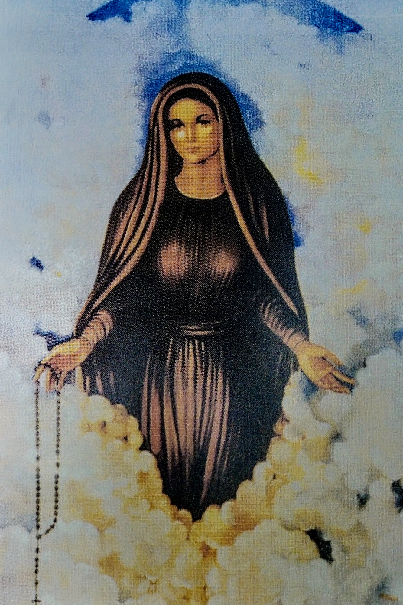

In questo sito troverai i messaggi della Madonna della Riconciliazione di Ostina (Reggello, FI)
dettati alla veggente Silvana Orlandi durante le apparizioni.
Le apparizioni avvengono l'ultima domenica di ogni mese pari sin dal 10 luglio del 1993.
Leggi e medita le esortazioni della Madonna e capirai cosa va o non va nella tua vita;
sentirai la sua voce che parla al tuo cuore, ti invita alla preghiera e ti porta Gesù.

Il codice sorgente di questo sito è aperto e visitabile su GitHub.
Se si vuole riportare un problema è possibile aprire una nuova issue
con possibilmente una soluzione.
Se si vuole contribuire al sito è possibile creare una pull-request.